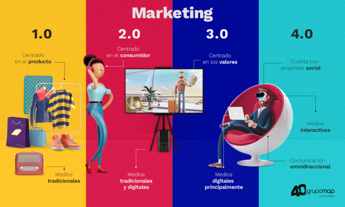

!Que onda con el comercio electrónico y Marketing Digital¡
UGMEX Campus Oaxaca. CBTis 150
¿Qué es el Comercio electrónico?
El comercio electrónico, traducido del término en inglés e-commerce, puede ser definido como la actividad económica que permite el comercio de productos y servicios a partir de medios digitales, como páginas web, aplicaciones
móviles y redes sociales.
El comienzo del e-commerce está relacionado con la apertura de Internet para el uso comercial, en el innovador año de 1991.
Sin embargo, no fue hasta 1994 que nació la primera empresa con una gran apuesta dirigida, específicamente, a los canales electrónicos: Cadabra. No la conoces, ¿cierto? No, no es que has vivido en una burbuja en los
últimos años. Lo que sucede es que en 1995 Cadabra cambió su nombre a Amazon Amazon comenzó como una librería online que luego se expandió a todo tipo de productos.
¿Para qué sirve?
En este punto nos enfocaremos en la utilidad que tiene este método de comercialización para las compañías y emprendedores.
Incremento de las oportunidades de venta
Lanzamiento de productos innovadores
Reconocimiento de marca
Beneficios del E-commerce
Si has prestado atención hasta aquí ya entiendes algunas de las ventajas del e-commerce, como su alcance mundial, la ubicuidad y la exposición.
Define el o los productos o servicios que venderás
Una tienda virtual no puede tener una oferta confusa. Es importante que definas y segmentes los productos, servicios, (o los grupos de estos) que comercializarás.
Lógicamente, esto debe ir acompañado de una profunda investigación de mercado y de la delimitación del público objetivo.
Garantizar el abastecimiento es indispensable antes de emprender cualquier negocio y una tienda virtual no es la excepción.
También definir puntos logísticos como los lapsos de entrega y los responsables de las mismas.
Desarrolla la tienda
Puedes hacerlo a través de una plataforma especializada en comercio electrónico (Amazon, Ebay, Mercadolibre).
Sin embargo, si deseas un concepto aún más personal, opta por el desarrollo propio (con apoyo de expertos en programación, diseño y otras áreas, por supuesto).
¿Qué redes sociales utilizarás? ¿Cómo atraerás usuarios a tu tienda? Debes responder estas y muchas otras preguntas para generar la estrategia virtual (Marketing Digital).
¿Qué es el Marketing Digital?
El Marketing Digital o Marketing Online es el conjunto de estrategias direccionadas a la comunicación y comercialización electrónica de productos y servicios.
Vitor Peçanha
Historia del Marketing Digital
En 1993, los usuarios de Internet comenzaron a relacionarse más con las empresas que anunciaban en la web, ya que en esta época surgieron los primeros anuncios en los que se podía hacer clic.
Sin embargo, fue tan solo hasta el año 2000 que el marketing digital se hizo más parecido a lo que conocemos hoy en día.
La llegada de la Web 2.0 permitió que cualquier persona se convirtiera en un productor de contenidos.

Características Marketing Digital
El término es usado para resumir todos tus esfuerzos de marketing en el ambiente online.
Usando canales digitales, como blogs, sitios, motores de búsqueda, medios sociales, emails y otros, las empresas intentan solucionar dolencias y deseos de sus clientes y clientes potenciales.
El Marketing Digital, puede ser realizado por las personas, empresas, universidades, ONGs, asociaciones, iglesias, etc. Pero debe tener en cuenta factores culturales, psicológicos, geográficos, jurídicos.
Llevar a cabo un análisis de la situación del sector, evaluar el lugar que ocupa la marca respecto a la competencia o realizar un análisis DAFO puede ayudar a elaborar una estrategia adaptada a la realidad de la empresa y a la
coyuntura del mercado.
Objetivos de una estrategia de Marketing Digital pueden ser, por ejemplo, “Aumentar un 30% las visitas a la web corporativa”,“Conseguir 25.000 nuevos suscriptores” o “Incrementar en un 15% las conversiones”.
Identificar el público objetivo al cual se dirigen nuestros mensajes de marketing es fundamental para el éxito de las campañas publicitarias. Para ello, se puede trazar un perfil con datos demográficos como el sexo, la edad, el
estado civil, el lugar de residencia, etc.
Especificar las líneas estratégicas y las acciones tácticas
Si queremos aumentar el tráfico a la web corporativa en un 30%, una estrategia muy útil sería mejorar el posicionamiento orgánico, y una de las tácticas para llevarlo a cabo podría ser la publicación periódica de contenidos optimizados
para los buscadores en el blog de la empresa.
Otro paso fundamental para implementar una estrategia de Marketing Digital es la selección de los canales adecuados. Algunos de los más usuales, son:
SEO (Search Engine Optimization). SEM (Search Engine Marketing). SMM (Social Media Marketing). Marketing de contenidos. Email Marketing. Social Network Advertising.
Todas las acciones de Marketing Digital, ya se trate de publicar contenidos en el blog, actualizar las redes sociales, o programar campañas en Facebook Ads, debe estar calendarizado. Ya sea en una plantilla de Excel, en Google
Calendar o en alguna herramienta específica de Social Media Management.
Una vez finalizado el periodo prestablecido para la implementación de la estrategia de Marketing Digital es hora de evaluar los resultados. Generalmente se utilizan los KPI (Key Performance Indicators) o “indicadores clave
de rendimiento”, que son métricas útiles para evaluar en qué medida se han alcanzado los objetivos.
M en CE. Jaime Alejandro Cruz Córdova alejandro.cruz@econsultoria.com.mx jacruz.oax@ugmexonline.comDocentes UGMEX CEO
E-consultoría